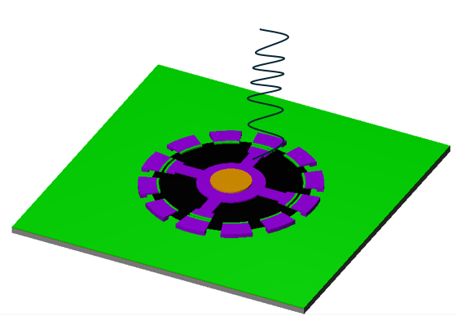
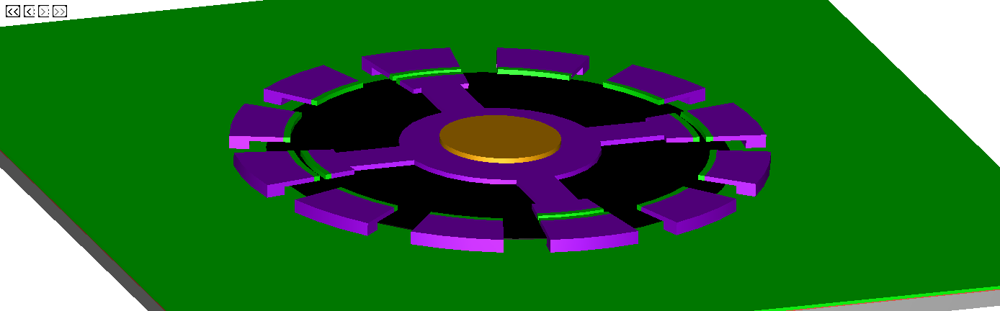
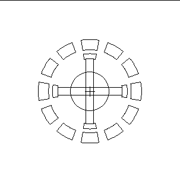

MEMS Nanobot Propulsion
I explored whether a variable capacitance motor coupled to a helical tail could propel a small robotic device against capillary blood flow. The project combines a proposed MEMS fabrication workflow with a propulsion model. It does not describe a fabricated or experimentally validated medical device.

Figures and design work
I developed the process flow in L-Edit, drawing on the electrostatic micromotor architecture described by Fan, Tai, and Muller. The selected figures show my modeled motor geometry, a fabrication cross-section, and a motor-and-tail concept. The propulsion calculation draws on low Reynolds number flagellar models and an added spherical-body drag term.
Modeled results
At a literature-reported motor speed of 7,875 RPM, the report predicts a speed of 0.834 micrometers per second for the initial tail geometry and 573.094 micrometers per second for an adjusted geometry. Both values describe motion in still fluid under the report's assumptions, not measured device speeds.
Neither predicted speed exceeds the assumed opposing capillary-flow speed of 1,000 micrometers per second. The motor benchmark also requires approximately 200 V, raising power and electrical-isolation questions for a biomedical implementation.
What the result means
The comparison did not support upstream propulsion for the two configurations modeled. It highlights motor speed, tail geometry, power, and operating conditions as constraints requiring further work. Biocompatibility, anatomical fit, voltage safety, and experimental validation are separate questions that this model does not resolve.
My additional contributions and lessons
I completed the design study individually, including the L-Edit process flow and propulsion modeling. The course project concluded with that analysis. The calculations helped me identify where the proposed design fell short of the upstream-swimming goal.
Next steps
This is a completed course study. If I returned to it, I would investigate a smaller or more efficient MEMS propulsion mechanism, or a different approach such as biological locomotion.
Credits and prior work
ECE 4320 Integrated Sensors and Actuators, Cornell University. Thanks to Professor Lal, Luis Marcelo Amaro, and Thejas Basavarajappa.
Motor architecture: L.-S. Fan, Y.-C. Tai, and R. S. Muller, IC-processed electrostatic micro-motors, IEEE IEDM (1988), doi:10.1109/IEDM.1988.32901. Propulsion modeling: B. Rodenborn et al., Propulsion of microorganisms by a helical flagellum, PNAS (2013), doi:10.1073/pnas.1219831110.
The full technical paper is available on request.

